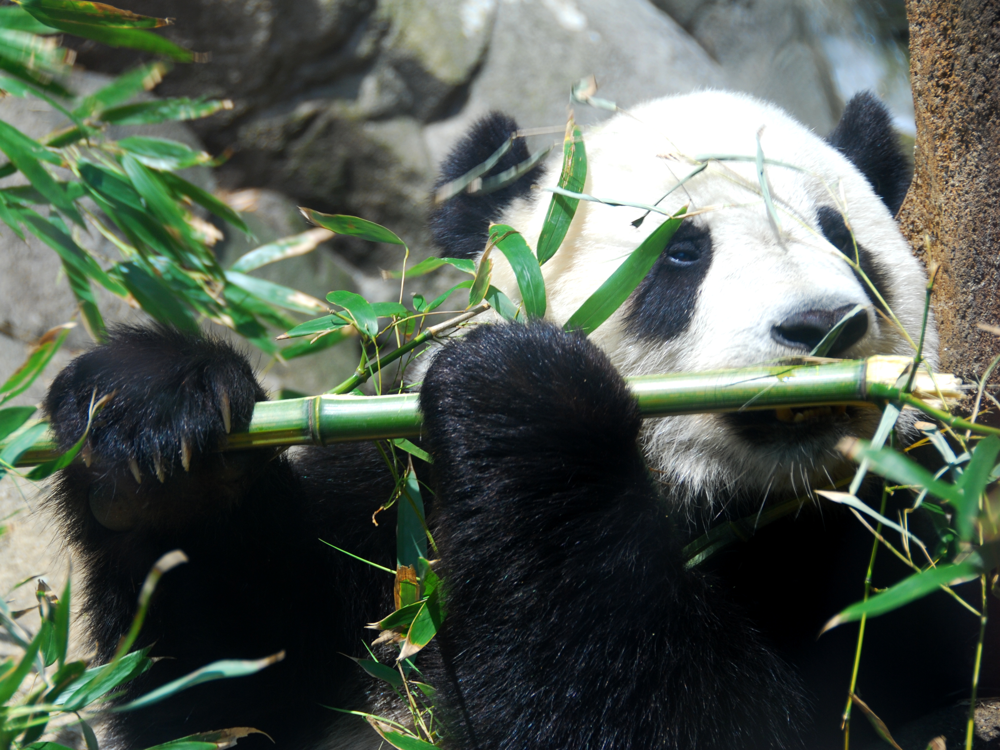

Facts About The Pandas
- 99% of a pandas diet consists of mostly bamboo, when in captivity they can eat honey, eggs, fish, yams, or specially prepared food.
- The life span of a giant panda in the wild can be approximately 20 years
- The giant panda spends about half of it's day collecting, preparing, and eating bamboo.
- A panda fur can be worth anywhere between $60,000 and $100,000 in the illegal black market.
- According to the department of Ecology and Evolutionary Biology in the University of Michigan,
pandas cannot taste meat and is why their diet consists of bamboo, when comparing the genome of pandas to other carnivores it was found that the panda T1R1 gene (taste receptor gene) devolps a mutation
causing the gene to turn into a psuedo gene which is a gene that loses functionality hence why pandas lose interest in meat and convert their attention to bamboo.